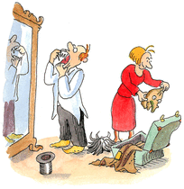

< « La peur donne des ailes », lut-il un jour dans une sombre histoire de bandits. « Quelle chance ont les trouillards, ils savent voler ! » Jojo essaya de faire peur à toutes sortes de bêtes pour voir si elles s'envolaient. Aux chats, aux chiens, aux hamsters ou aux poissons rouges. Aucune de ces bêtes ne s'envolait. À sa mère, il fit une belle trouille.